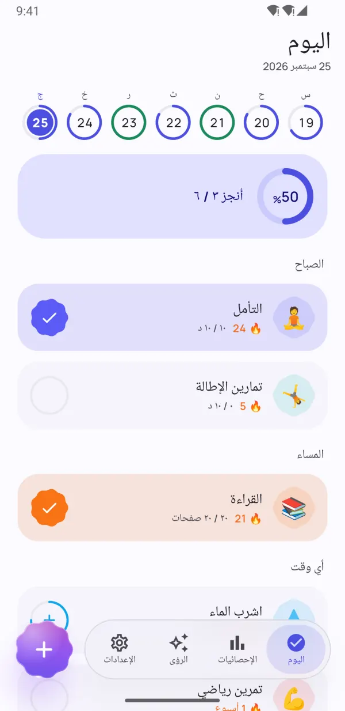
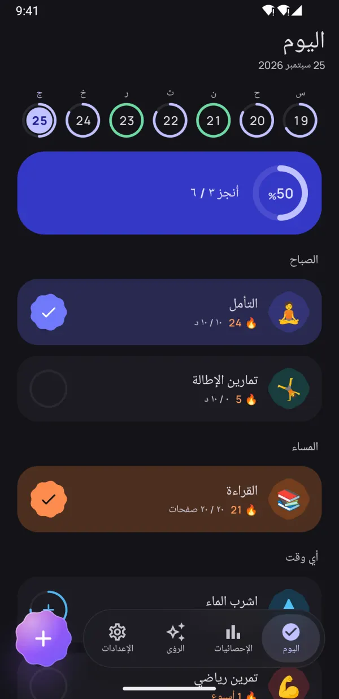
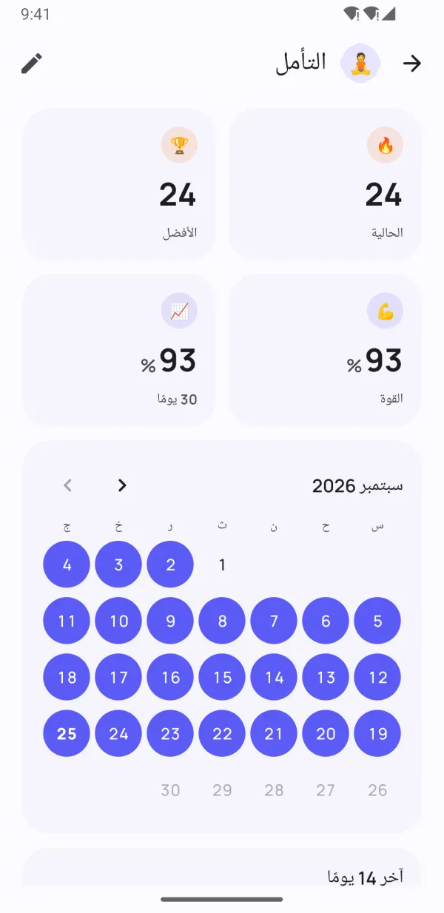
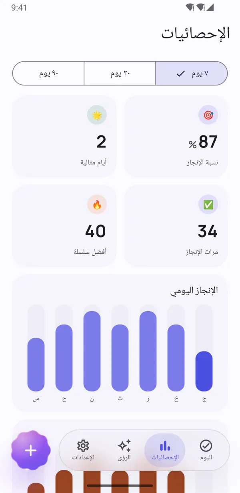
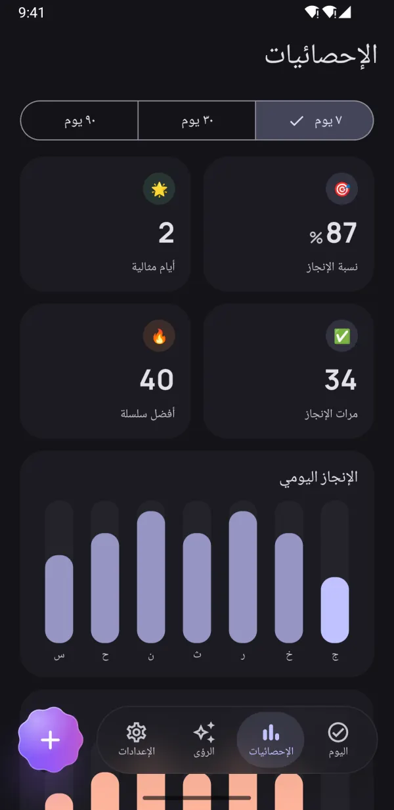
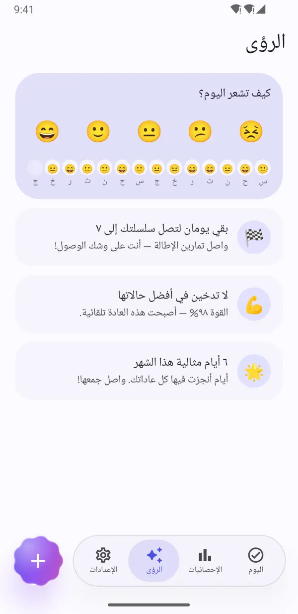
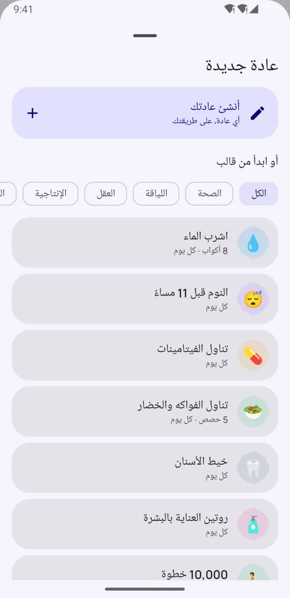
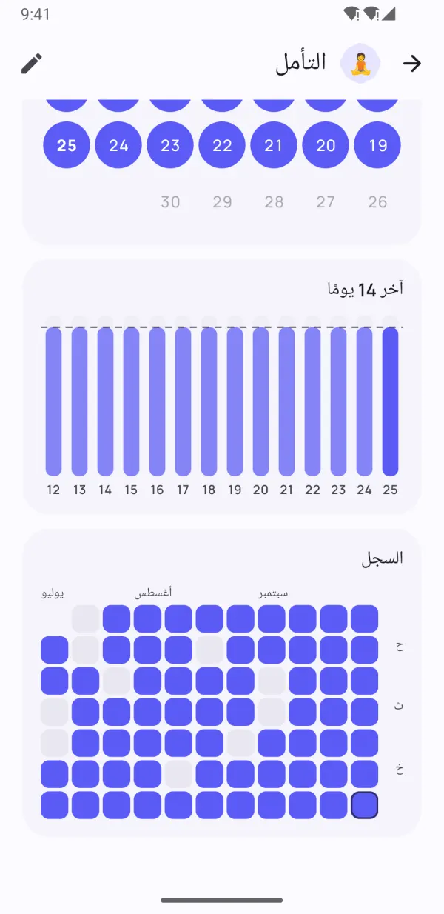

عادات صغيرة.
تغيير كبير.
يساعدك Dotday على بناء العادات الجيدة والتخلص من العادات السيئة — دون ضغط. سجّل إنجازك بلمسة واحدة، وحافظ على سلسلتك حتى في الأيام المزدحمة، واكتشف ما ينجح معك فعلًا.
- مجاني الاستخدام
- بلا تسجيل
- بياناتك تبقى على هاتفك
- 13 لغة


صُمّم لتدوم عاداتك
كل ما تحتاجه للاستمرار — ولا شيء يعترض طريقك.
يومك كله بلمسة واحدة
مجموعات الصباح والظهيرة والمساء تحوّل روتينك إلى قائمة مهام بسيطة. لمسة واحدة وتم.
- نعم/لا، والعدّ، والمؤقت، وعادات الإقلاع
- شريط الأسبوع يعرض كل يوم بنظرة واحدة
- «تم» و«بعد 10 دقائق» من التذكير مباشرةً

سلاسل تتسامح مع يوم سيئ
أيام الراحة والجداول المرنة وتجميد السلسلة تُبقيك مستمرًا. وتُظهر «قوة العادات» مدى رسوخ كل عادة فعلًا — لا طول سلسلتك فقط.
- «تخطي هذا اليوم» دون أن تنقطع سلسلتك
- تجميد السلسلة للأيام المزدحمة أو أيام المرض
- مؤشر لقوة العادة من 0 إلى 100%


شاهد تقدّمك الحقيقي
الخرائط الحرارية والتقويمات واتجاهات الإنجاز تُظهر بدقة كيف تسير أمورك خلال 7 و30 و90 يومًا.
- خريطة حرارية لكل عادة
- أفضل سلسلة ونسبة الإنجاز
- جميل في الوضعين الفاتح والداكن

رؤى تُبقيك مستمرًا
سجّل مزاجك في ثانية، وسيكتشف Dotday ما ينجح معك فعلًا: أفضل أيامك وأصعبها، والعادات التي تحسّن مزاجك.
- تسجيل المزاج بلمسة واحدة
- تشجيع قبل إنجازك التالي
- اكتشف العادات التي تجعلك أسعد
تفاصيل صغيرة، فرق كبير
ميزات مدروسة تجعل التتبّع سهلًا.
أدوات الشاشة الرئيسية
أنجز عادات اليوم، وتابع سلسلة أو خريطة حرارية — دون فتح التطبيق.
تذكيرات فعّالة
اضغط «تم» أو أجّل التذكير «بعد 10 دقائق» من الإشعار مباشرةً.
مؤقت مدمج
للعادات المرتبطة بالوقت مؤقت مع إشعار مباشر.
Health Connect
يمكن للخطوات والنوم والتمارين إنجاز العادات تلقائيًا.
40 قالبًا
شرب الماء، القراءة، الرياضة، التأمل، الإقلاع عن التدخين — ابدأ في ثوانٍ.
نظّم يومك
قسّم عاداتك إلى الصباح والظهيرة والمساء.
الملاحظات والمزاج
أضف ملاحظة لأي يوم، واكتشف كيف تؤثر عاداتك في مزاجك.
الوضع الداكن وAMOLED
ألوان Material You ومظهر أسود خالص لشاشات OLED.
النسخ الاحتياطي والتصدير
صدّر كل بياناتك إلى JSON أو CSV مع Pro، واستعِدها على هاتف جديد.
ألقِ نظرة من الداخل
ابنِ عادات تدوم شاهد تقدّمك الحقيقي إحصاءاتك في لمحة رؤى تحفّزك للاستمرار 
ابدأ فورًا مع 40 قالبًا رائع في الوضع الداكن 
كل يوم مسجّل بأناقة خاص. بلا حساب. بلا إعلانات.
اختر عاداتك
اختر من 40 قالبًا أو أنشئ عادتك الخاصة — أي عادة، على طريقتك.
سجّل كل يوم
لمسة واحدة في شاشة «اليوم» أو من الأداة أو الإشعار.
شاهدها ترسخ
السلاسل و«قوة العادات» و«الرؤى» تُظهر تقدّمك وهو ينمو.
الخصوصية أولًا
بلا حساب. بلا تسجيل. بلا إعلانات. تُحفظ عاداتك وملاحظاتك وحالتك المزاجية على هاتفك فقط — ولا نراها أبدًا. سياسة الخصوصية
- بلا حساب
- بلا إعلانات
- دون اتصال
- بياناتك على هاتفك
افتح كل الميزات مع Pro
التطبيق الأساسي مجاني للأبد. اشترك في Pro لعادات غير محدودة وكل الميزات — وجرّبه مجانًا لمدة 7 أيام.
- عادات غير محدودة
- السجل الكامل وإحصائيات 90 يومًا
- كل الرؤى وعلاقة العادات بالمزاج
- تتبّع تلقائي مع Health Connect
- كل الأدوات
- 5 مرات تجميد للسلسلة كل شهر
- حتى 5 تذكيرات لكل عادة
- التصدير إلى JSON وCSV
اشتراك شهري أو سنوي، أو شراء لمرة واحدة مدى الحياة. ألغِ في أي وقت من Google Play.
الأسئلة الشائعة
هل Dotday مجاني؟
نعم. التطبيق الأساسي مجاني للأبد: حتى 5 عادات، والتذكيرات، والسلاسل، وأداة «اليوم»، وإحصائيات 30 يومًا. ويفتح Dotday Pro عادات غير محدودة وكل الميزات، مع تجربة مجانية لمدة 7 أيام.
هل أحتاج إلى إنشاء حساب؟
لا. يعمل Dotday دون حساب أو تسجيل أو اتصال بالإنترنت. ثبّته وابدأ فورًا.
أين تُحفظ بياناتي؟
على هاتفك فقط. لا تغادر عاداتك وملاحظاتك وحالتك المزاجية جهازك أبدًا. ومع Pro يمكنك تصدير نسخة احتياطية بصيغة JSON أو CSV في أي وقت.
ماذا يحدث إذا فاتني يوم؟
لن يضيع تقدّمك. يمكنك تخطي اليوم كيوم راحة، أو استخدام تجميد السلسلة، أو تحديد هدف أسبوعي بدلًا من يومي. وتنخفض «قوة العادات» تدريجيًا بدلًا من أن تعود إلى الصفر.
ما أنواع العادات التي يمكنني تتبّعها؟
أربعة أنواع: نعم/لا ("التأمل")، والعدّ ("8 أكواب ماء")، والمؤقت ("30 دقيقة قراءة")، وعادات الإقلاع ("بلا تدخين").
كيف أنقل عاداتي إلى هاتف جديد؟
مع Dotday Pro، افتح «الإعدادات» ← «بياناتك» ← «تصدير نسخة احتياطية» واحفظ ملف JSON. على الهاتف الجديد، ثبّت Dotday واختر «الاستعادة من نسخة احتياطية» — الاستعادة مجانية.
هل يوجد إصدار لأجهزة iPhone؟
ليس بعد — Dotday متاح حاليًا لأندرويد على Google Play.
كيف ألغي اشتراك Pro؟
افتح Google Play ← الملف الشخصي ← الدفعات والاشتراكات ← الاشتراكات، واختر Dotday ثم اضغط «إلغاء». أما الشراء مدى الحياة فلا يحتاج إلى إلغاء.